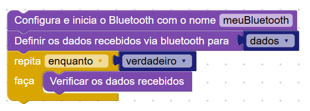
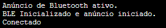
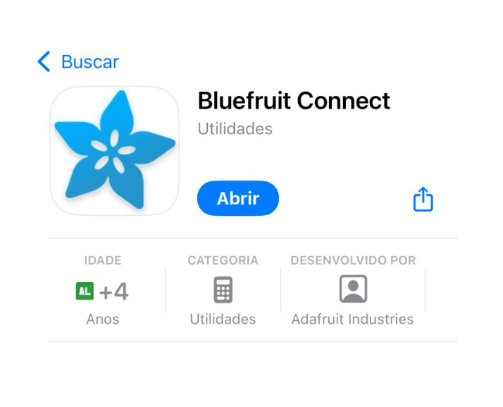
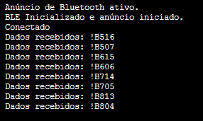
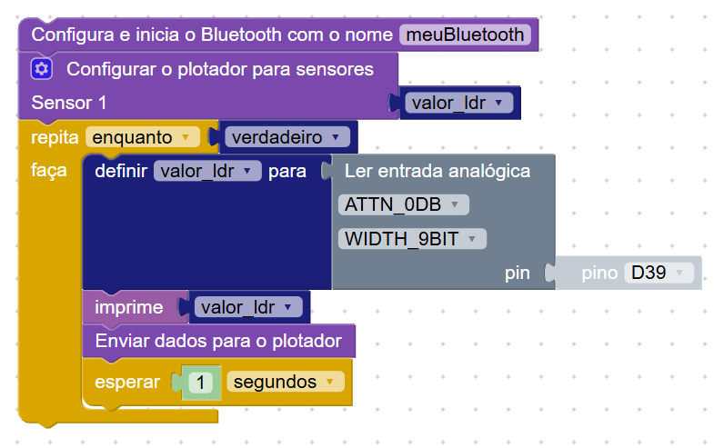
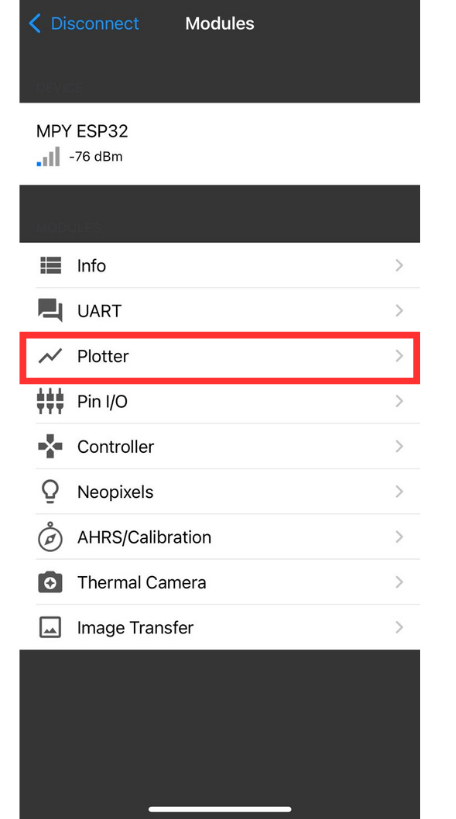
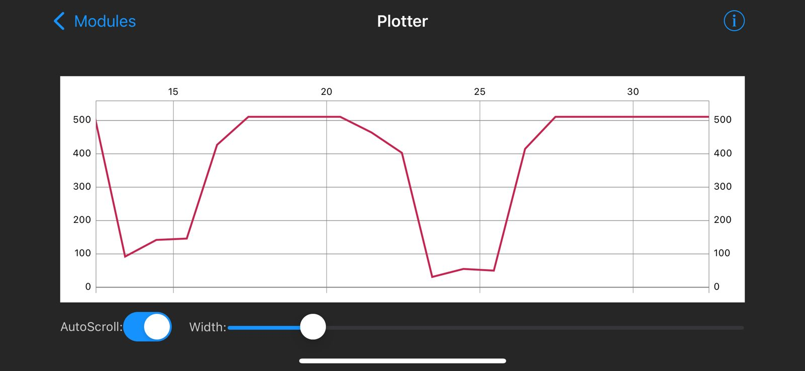

Comunicação via Bluetooth (BLE)
Nesta Seção
O Bluetooth é uma tecnologia de comunicação sem fio de curto alcance, usada em celulares, fones de ouvido, computadores, carros e sistemas embarcados. Ele permite a troca de dados entre dispositivos próximos, de forma simples e sem cabos.
Neste projeto utilizamos o padrão BLE (Bluetooth Low Energy), que é o único suportado pelo MicroPython no ESP32. Ele é ideal para sistemas com sensores, comandos remotos, automação e monitoramento com baixo consumo de energia.
Com o BLE, é possível criar projetos como: controle remoto de robôs, envio de dados de sensores para o celular, gráficos de monitoramento em tempo real, automação residencial, sistemas de alarme e até jogos interativos usando botões virtuais.
Blocos disponíveis para comunicação Bluetooth
Os blocos de Bluetooth estão disponíveis na aba Comunicação → Bluetooth. Para o funcionamento do código, é necessário instalar a biblioteca ble_advertising clicando no botão indicado na interface.
- Configura e inicia o Bluetooth com o nome: define o nome do dispositivo BLE visível no celular.
- Definir os dados recebidos via bluetooth para: armazena os dados enviados pelo aplicativo em uma variável.
- Verificar os dados recebidos: interpreta os comandos recebidos.
- Configurar o plotador para sensores: permite definir qual sensor será visualizado em gráfico no app.
- Enviar dados para o plotador: envia valores da aplicação para o gráfico do aplicativo.
Programa base de comunicação Bluetooth
Este é o programa base mais simples e o principal ponto de partida. Com ele, já conseguimos testar se os dados estão chegando do celular para a placa.
O que esse programa faz?
- Inicializa o BLE com o nome
meuBluetooth. - Cria a variável
dadosque recebe os comandos do celular. - Verifica continuamente os dados recebidos e os interpreta com base no valor recebido.
Após montar, clique em Play e abra a aba Console. A mensagem “Conectado” indicará que o Bluetooth está funcionando corretamente.
Aplicativo Bluefruit Connect
Para interagir com o programa, usamos o app Bluefruit Connect da Adafruit. Ele está disponível gratuitamente para Android e iOS. Procure por “Bluefruit Connect” na loja de aplicativos, instale e abra.
No aplicativo, siga os passos abaixo:
- Abra o app e selecione o dispositivo chamado
MPY ESP32. Mesmo que você tenha definido outro nome no bloco, esse nome pode aparecer como padrão. - Acesse a aba Controller e toque em Control Pad.
- Use os botões direcionais ou numéricos para enviar comandos para a placa.
Testando os botões no console
Após se conectar ao dispositivo e abrir o Control Pad, pressione os botões do app. No console da IDE, aparecerão mensagens como: Dados recebidos: !B507.
No nosso teste, usamos os botões de seta (cima, baixo, esquerda e direita). Para cada botão, o app envia dois comandos: um ao pressionar e outro ao soltar. Isso permite que o programa saiba quando o botão foi apertado e quando foi liberado.
Acender LEDs integrados via Bluetooth
Neste exemplo, vamos controlar dois LEDs integrados da placa através do aplicativo. Quando o botão 1 for pressionado, o LED azul (pino D2) acenderá. Quando o botão 2 for pressionado, o LED verde (pino D33) será ativado.
O comportamento é simples: enquanto o botão estiver pressionado no aplicativo, o LED correspondente permanece aceso. Ao soltar o botão, o LED apaga imediatamente.
Essa lógica pode ser aplicada para acionar qualquer outro dispositivo: motores, robôs, sirenes, relés e mais. Aqui usamos LEDs apenas como exemplo visual e prático para facilitar o aprendizado.
Uma das vantagens impressionantes do BLE é a velocidade de resposta. A comunicação entre o app e a placa é praticamente instantânea, o que permite criar interações em tempo real sem atrasos visíveis.
O programa base continua o mesmo do exemplo anterior, mas agora adicionamos condições se para verificar os dados recebidos e controlar os LEDs com base neles.
O código verifica se a variável dados contém o valor correspondente aos botões pressionados no aplicativo:
- Se
dados = "!B11", o LED azul (pino D2) acende. - Se
dados = "!B19", o LED verde (pino D33) acende. - Se nenhum desses valores for detectado (ou se o botão for solto), os LEDs são apagados.
Enviando dados de sensores para o gráfico do app
O aplicativo Bluefruit Connect oferece um recurso chamado Plotter, que permite visualizar dados em tempo real em forma de gráfico. Esse recurso é ideal para monitorar sensores analógicos, como temperatura, luminosidade (LDR), umidade, entre outros.
Essa ferramenta é muito útil para interpretar o comportamento de sensores ao longo do tempo. Ao ver as variações graficamente, conseguimos identificar picos, quedas e padrões de forma mais clara do que apenas olhando valores no console.
Neste exemplo, vamos usar o sensor de luminosidade (LDR) integrado à placa, conectado ao pino D39, para enviar valores via Bluetooth e visualizá-los em tempo real no gráfico.
Ao clicar na engrenagem azul do bloco “Configurar o plotador para sensores”, é possível adicionar mais campos para enviar até 3 valores diferentes ao gráfico, como temperatura, umidade ou outros sensores.
O aplicativo Bluefruit Connect suporta até 3 gráficos simultâneos, facilitando a análise de múltiplos sensores ao mesmo tempo.
O que esse programa faz?
- Inicializa o Bluetooth e configura o plotador com o nome do sensor.
- Lê continuamente o valor do sensor LDR no pino
D39. - Exibe esse valor no console e também envia para o gráfico no app.
- Repete esse processo a cada 1 segundo.
Acessando o gráfico no app
Após rodar o programa e conectar ao dispositivo, clique na opção Plotter no aplicativo Bluefruit Connect.
Visualizando os resultados no gráfico
No gráfico, é possível acompanhar a variação do valor do sensor em tempo real. A linha se movimenta conforme a luminosidade muda — ao cobrir o sensor, o valor diminui; ao iluminar, o valor aumenta.
O Plotter também possui controles na parte inferior:
- AutoScroll: quando ativado, o gráfico rola automaticamente à medida que novos dados chegam.
- Width: ajusta a largura da linha no gráfico, útil para destacar picos ou suavizar curvas.